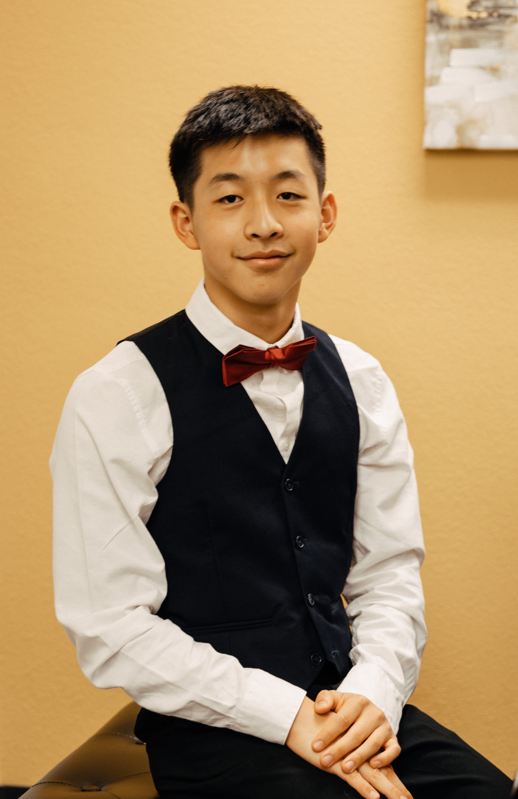
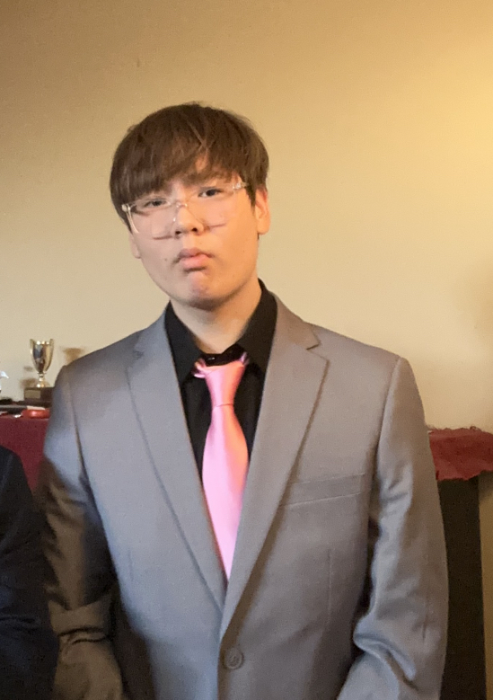

Jack Yu
Founder, President
I'm Jack Yu, and I study at Albuquerque Academy, where my many passions continue to develop and thrive. I'm a swimmer and have been competing since I started my elementary years. I also have a love for music, both listening to a variety of genres, and performing, whether solo or collaboratively. My competitive nature has driven me to compete in many piano competitions, and my curiosity of mathematics has led me to engage in many math competitions as well.
I conceived this project together, with the help of my friends, as we noticed a lot of neglect in using sunscreen. Especially in the Land of Enchantment, the three hundred plus days of sunshine and a high elevation give UV rays the opportunity to do incredible harm, which can be minimized by applying sunscreen. As well as giving back to the community by supplying large fundraised quantities of sunscreen, we plan to educate elementary school children on the usage of sunscreen, creating a more happy, sunburn-free community.
Cindy Fan
Co-Founder, General Manager
My name is Cindy Fan and I am currently a rising senior at Albuquerque Academy. One of the many hobbies that I enjoy doing is swimming. As a passionate swimmer, I bring over a decade of competitive swimming experience to the table, having won numerous New Mexico State Championships and even competing nationally at the Long Course Senior Zones Championships in California.Using my yeas of experience and drive, I aspire to lead my high school swim team to further victories as captain, extending our legacy of state championship excellence. Outside the pool, I actively participate in DECA, a club where I've honed my business skills and emerged as a New Mexico State Champion, qualifying for nationals. Additionally, I find joy in community service endeavors, whether it's crafting crochet hats for premature or NICU babies, baking treats for our local dog shelter, or fundraising through handmade stickers to support deserving non-profits. At ABCsunscreen, our mission is rooted in recognizing a crucial need: the imperative to educate individuals about the critical role sunscreen plays in averting the devastating effects of skin cancer. Annually, more than 9,500 people die due to skin cancer and 2 people get diagnosed every hour.Yet this tragedy is largely preventable through the simple act of applying sunscreen.
Our initiative at ABCsunscreen is driven by a deep commitment to empowering the New Mexico community with the knowledge and resources needed to combat the harmful effects of UV rays. By raising awareness and promoting sun safety practices, we strive to mitigate the staggering toll of skin cancer on individuals and families alike. Through by giving out free sunscreen at our educational booths, we aim to instill a culture of proactive skincare and UV protection. I have helped the community numerous of times by donating feminine products to those in need and baking dog treats for shelters. I have also been a competitive swimmer for over a decade, and I truly enjoy the sport. In this project, I hope to see that we can aid those in need through out efforts we put into this project.
Jin Choi
Logistics
I'm Jin Choi. I like a number of things: tennis, video games, and creating ceramics. I've seen many pictures of how gross and painful skin cancer was and some of my friends have actually gotten skin cancer. This is why it is important to wear sunscreen.
This project is really important, as in New Mexico, it's very sunny. When you walk around to many places, if you forget to wear sunscreen, then you're kind of doomed. With our project, my goal is to help manage our booths, and set up many locations. In the future, we will have many stations so people will always have sunscreen.